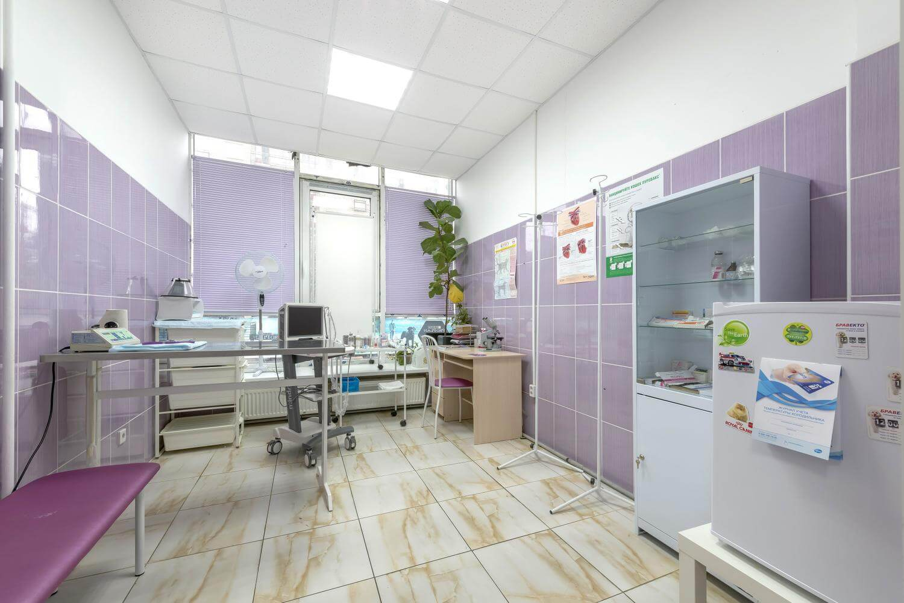

Мы предоставляем вам контактную информацию и возможность отслеживать наличие крови в выбранной ветеринарной клинике или больнице. Вы можете связаться с ними напрямую, чтобы уточнить наличие необходимой группы крови и узнать, как получить ее для своего питомца. Мы также можем помочь связаться с больницей и получить ответы на ваши вопросы. Наша цель - обеспечить вам максимально быстрый и удобный доступ к информации о донорской крови.
